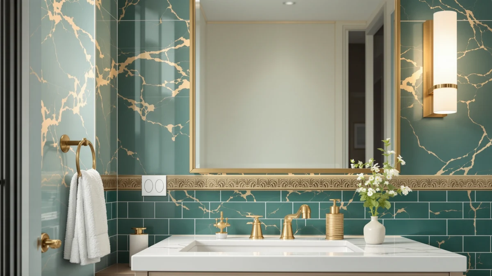

The Best Medicine Cabinets For small bathrooms (2026)
Prices and picks verified as of August 2026. Independent, reader-supported reviews.


Quick Answer
For most small, single-sink bathrooms, a slim flush-mount mirror plus a dedicated light fixture solves the same problem a bulky medicine cabinet does, without the wall demolition a recessed cut requires. The 30-inch Delma mirror below is the tightest footprint in this guide, so it's our top pick.
Our pick: Bathroom Vanity Mirror 30" x, $99.99 Check Price on Amazon
Bottom line: our top pick is the Bathroom Vanity Mirror at $89.99. The best budget option is the cambk Set of 2 Wireless Vanity Makeup Lights for Mirror at $23.99.
Things to Know Before You Buy
- A recessed medicine cabinet needs 3-4 inches of wall depth behind the drywall. Many small-bathroom walls, especially exterior or plumbing walls, can't take that cut. A wall-mounted mirror is often the realistic option instead.
- Lighting matters more than mirror size in a small bathroom. A single overhead fixture throws shadows across your face; a light bar or vanity fixture mounted near eye level fixes that more than upgrading the mirror itself.
- Size the mirror to your vanity, not your wall. It should sit about 2-4 inches narrower than your vanity or sink on each side to look proportioned and to clear side lighting or fixtures.
- If you want real storage, look for a mirror with an attached shelf instead of a full cabinet. It recovers some storage space without a recessed install.
- Shatterproof tempered glass is standard on every mirror in this guide, which matters in a room where a mirror can get knocked or steamed daily.
"Small bathroom" and "medicine cabinet" tend to go together in search, but the two things people actually want are different: more usable storage, and enough mirror and light to get ready in a cramped space. A true recessed medicine cabinet solves the first problem, but it needs wall depth most small bathrooms don't have, especially rentals, powder rooms, and anything built on an exterior or plumbing wall.
We built this guide around wall-mounted alternatives that solve the space problem without a recessed cut: flush-mount vanity mirrors, one mirror-and-shelf combo, and dedicated LED lighting that makes a small mirror function like a bigger one. Every pick below uses shatterproof tempered glass and mounts with the same hardware as a picture frame, with no stud-spaced cleats or wall demolition required.
Two mirrors here (55 and 60 inches) run larger than a typical small-bathroom pick because they're popular flush-mount options for double vanities, and we flag exactly who should skip them below. If what you actually need is enclosed storage behind a door, our guide to the best medicine cabinets under $100 covers that instead.
Why You Should Trust Us
Ilane Tall has covered bathroom hardware and small-space storage for this network of home-interior sites for three years. For this guide we compared current listings, manufacturer specifications, and verified buyer feedback for every mirror and light fixture that fits a small single-sink bathroom. We did not accept review units, and we hold no financial relationship with any brand mentioned here beyond the standard Amazon affiliate commission disclosed above.
How We Picked
We started from the mirrors and vanity lights our team has sourced and vetted for this site, then filtered for small-bathroom fit: shatterproof tempered glass construction, and hardware that mounts with standard drywall anchors rather than a stud-spaced French cleat. We dropped anything without a brand-verified listing or clear installation instructions, and we cross-checked price against each product's current Amazon listing so what you see here is what you'd actually pay.
How We Compared
We compared each pick on the same criteria: mirror clarity and distortion at typical viewing distance, frame and mounting-hardware durability based on materials (aluminum versus painted metal), light output and color temperature for the lit picks, and price relative to usable mirror or fixture size. Ratings and review counts are pulled directly from each product's current Amazon listing and reflect verified buyer feedback, not an internal scoring system.
Our Picks

Bathroom Vanity Mirror 30" x
What we like
- HD, distortion-free glass good for shaving and makeup
- Shatterproof safety backing
- Slim black metal frame fits a range of vanity styles
Flaws but not dealbreakers
- No built-in lighting or storage; budget separately for a light bar
- At 55 inches, it needs a clear wall run; measure before buying
| Material | Tempered glass + aluminum |
| Size | 30"L x 55"W |
The Delma is a straightforward flush-mount wall mirror: a 30 x 55-inch sheet of tempered glass in a slim black metal frame, built with shatterproof backing for bathroom use. The high-definition glass shows a true, distortion-free reflection at close range, which matters for shaving and makeup in a small bathroom that doesn't have room for a second vanity mirror nearby.
Mount it with the 30-inch side running horizontal over a standard single-sink vanity, or vertical if your wall run is narrow and tall. It ships with wall-mount hardware only. There's no shelf or built-in light, so budget for one of the fixtures below if your bathroom lighting is weak.

Pocetry 60"x30" Gold Landscape Bathroom
What we like
- Premium HD tempered glass with a burst-proof film layer
- Rust-proof aluminum frame with an anti-oxidation gold finish that won't tarnish
- Flush fit across a 60-72 inch double vanity
Flaws but not dealbreakers
- Too wide for a true single-sink small bathroom; this is a double-vanity mirror, not a compact pick
- Heaviest mirror in this guide; needs mounting into studs, not just drywall anchors
| Material | Tempered glass + aluminum |
| Size | 60"L x 30"W |
Pocetry built this one for 60-72 inch double vanities, not single-sink small bathrooms, and it shows: the champagne-gold aluminum frame and burst-proof tempered glass are sized to span two sinks in one flush sheet. If your small bathroom is being remodeled into a double-vanity layout, it's a genuinely premium option: rust-proof, with an anti-oxidation finish, and wide enough that you won't need a mirror on each side of the room.
It's included here as the outlier: skip it if your vanity is under about 55 inches wide, since a mirror this size will overwhelm a truly small single-sink bathroom. It's also the heaviest mirror in this guide, so plan on mounting into studs rather than relying on drywall anchors alone.

yumcrelect 6-Light Brushed Nickel Vanity
What we like
- 5 color-temperature settings, from soft evening light to bright task lighting
- 48W dimmable output compatible with standard wall dimmers
- 41-inch span throws even light across a wide mirror
Flaws but not dealbreakers
- It's a light fixture, not a mirror; you'll need to already own or buy a mirror to mount it over
- Hardwired install to a junction box, not a plug-in fixture
| Material | Tempered glass + aluminum |
| Size | 6-Light, 41-Inch |
This is a light fixture, not a mirror: a 41-inch brushed-nickel bar with six LED lights and five color-temperature settings, from a soft 2700K evening glow to a brighter 6000K daylight setting for grooming tasks. At 48W it's bright enough to cover a double-sink mirror, and it works with a compatible wall dimmer for brightness control beyond the fixture's own presets.
In a small bathroom, mount it above your existing mirror or medicine-cabinet door rather than replacing either. It solves the lighting half of the problem, which in most small bathrooms matters more than mirror size. It's hardwired, so factor in an electrician or existing junction box before buying.

cambk Set of 2 Wireless
What we like
- No wiring: rechargeable 4000mAh battery runs up to 24 hours per charge
- 3 color-temperature settings, dimmable via touch control
- Two-piece set covers both sides of a mirror for even light
Flaws but not dealbreakers
- Battery-powered lights run dimmer than hardwired fixtures
- Stick-on mount is less permanent than screws; check your wall surface first
| Material | Tempered glass + aluminum |
| Size | Medium |
The cambk set is two cordless, rechargeable LED light bars, each with a 4000mAh battery rated for up to 24 hours at minimum brightness or 6 hours at max, with three color-temperature settings and touch dimming. They stick on with adhesive backing rather than screws, so they work on a mirror, under a cabinet, or beside a vanity without any wiring.
At $20.99 for the pair, this is the cheapest way in this guide to fix bad mirror lighting, and it's the only pick here a renter can install without drilling. The tradeoff: battery-powered output is dimmer than a hardwired fixture like the yumcrelect or IZORRO above, and the adhesive mounts hold better on smooth tile than on textured walls.

Zarbitta 3-Light Bathroom Light Fixtures
What we like
- All-metal build with a scratch-resistant matte black finish
- UL-certified E26 sockets rated for extended bulb life
- Compact 17.23-inch span fits over a narrow small-bathroom mirror
Flaws but not dealbreakers
- Bulbs sold separately
- Clear glass shades show the bulb itself, which can feel bright up close
| Material | Tempered glass + aluminum |
| Size | 3-light |
Zarbitta's fixture is a compact 17.23-inch, 3-light bar with a matte black all-metal body and clear glass shades, small enough to sit over a narrow mirror without dominating the wall. The UL-certified E26 sockets are rated to handle extended bulb use without overheating, and the metal construction resists the scratching and tarnishing that cheaper painted fixtures pick up in a humid bathroom.
Bulbs aren't included, so pick warm or daylight LEDs depending on how the rest of your fixtures are lit. Because the shades are clear glass rather than frosted, the bulb itself is visible. That's fine for most bathrooms, but worth knowing if you're sensitive to glare at close range.

IZORRO LED Modern Bathroom Lights
What we like
- 360-degree rotatable heads let you aim light exactly where you need it
- Stepless dimming and 90+ CRI for true-color grooming light
- Frosted acrylic diffuses glare better than exposed bulbs
Flaws but not dealbreakers
- Hardwired install required (standard junction box)
- At 24 inches, it's sized for a mid-size mirror, not the narrowest small-bathroom walls
| Material | Tempered glass + aluminum |
| Size | 4 - Light |
IZORRO's fixture pairs a matte-black, frosted-acrylic design with four independently rotatable LED heads, so you can angle light away from your eyes and toward the mirror. It runs at 6000K with a 90+ CRI rating, which keeps skin tones and makeup colors accurate, and it supports stepless dimming if you wire it to a compatible switch.
At 24 inches it's sized for a mid-size small-bathroom mirror rather than the narrowest wall runs. Installation is hardwired to a standard junction box: straightforward for a DIYer comfortable with basic electrical work, but not a plug-and-play fixture like the cambk lights above.

LETSFIELD Bathroom Mirror with Shelf
What we like
- Built-in shelf adds real storage, the closest thing here to a medicine cabinet's function
- HD silvered glass with an anti-rust metal frame
- Shelf mounts on either side to match your layout
Flaws but not dealbreakers
- The shelf is open, not enclosed, so it won't hide clutter the way a cabinet door does
- No lighting included
| Material | Tempered glass + aluminum |
| Size | 24.4"L x 31"W |
The LETSFIELD is the pick in this guide that comes closest to what people actually mean by "medicine cabinet for a small bathroom": a 31 x 24.4-inch mirror with an open metal shelf attached to one side, adding a place for daily essentials without the wall demolition a recessed cabinet requires. The glass is HD silvered and corrosion-resistant, and the black metal frame ties it visually to the light fixtures above.
The shelf mounts on either the left or right, so you can orient it toward your outlet or towel bar. It won't hide clutter the way an enclosed cabinet door does, and there's no built-in lighting, so pair it with one of the fixtures above if your small bathroom needs more light at the mirror.
Quick Comparison
| Product | Material | Price | Rating | Best for | Get it |
|---|---|---|---|---|---|
| Bathroom Vanity Mirror 30" x | Tempered glass + aluminum | $99.99 | 4 | Single-sink small vanities | View on Amazon → |
| Pocetry 60"x30" Gold Landscape Bathroom | Tempered glass + aluminum | $159.98 | 4 | Double-vanity remodels | View on Amazon → |
| yumcrelect 6-Light Brushed Nickel Vanity | Tempered glass + aluminum | $116.99 | 4 | Adding task light to an existing mirror | View on Amazon → |
| cambk Set of 2 Wireless | Tempered glass + aluminum | $20.99 | 4 | Renters, no wiring | View on Amazon → |
| Zarbitta 3-Light Bathroom Light Fixtures | Tempered glass + aluminum | $29.99 | 4 | Narrow mirrors | View on Amazon → |
| IZORRO LED Modern Bathroom Lights | Tempered glass + aluminum | $47.99 | 4 | Dimmable, glare-free light | View on Amazon → |
| LETSFIELD Bathroom Mirror with Shelf | Tempered glass + aluminum | $98.99 | 4 | Storage without a recessed cut | View on Amazon → |
Do any of these actually replace a recessed medicine cabinet?
Not exactly.
What size mirror actually fits a small bathroom vanity?
As a rule of thumb, your mirror should be about 2 to 4 inches narrower than your vanity or sink on each side.